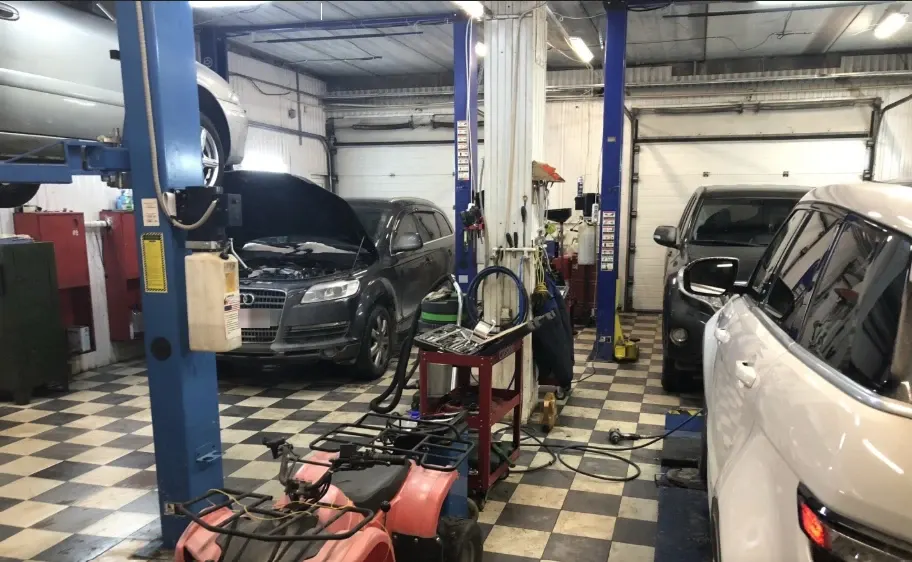
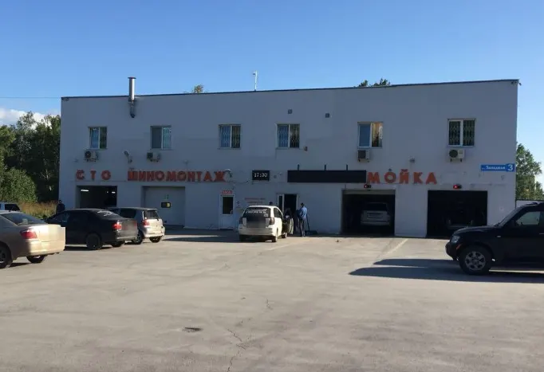
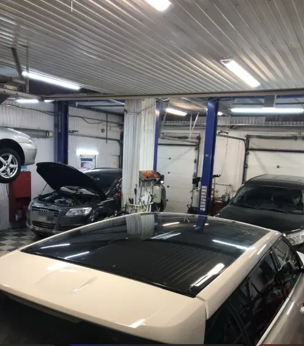
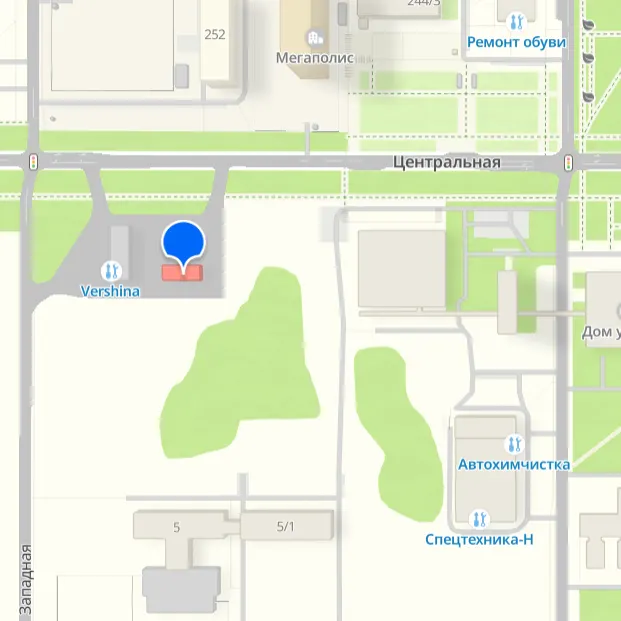

Topservice
Автосервис, шиномонтаж, замена колодок, ремонт порезов
- Рейтинг 4,9 в 2ГИС по 231 оценке, 167 отзывов
- Краснообск, Западная, 3, ежедневно 09:00–20:00
- Оплата картой, наличными, по QR-коду и через банк

Что рядом с ремонтом
Входит
- Шиномонтаж, диагностика и ремонт в одном месте
- Затяжка колёсных гаек динамометрическим ключом – по отзывам
- Заправка кондиционера на профессиональном оборудовании – по отзывам
- Wi-Fi для клиентов, 2 парковки рядом
- Запись по телефону, в WhatsApp или Telegram
Отдельно, если нужно
- Итоговая цена ремонта зависит от автомобиля и объёма работ
- Стоимость ремонта называют после осмотра
Услуги и цены
Прайса на карточке в 2ГИС нет. Стоимость называют после осмотра, цены уточняйте при записи.
Шиномонтаж
- Шиномонтажвозможна записьуточнить
- Замена колодокуточнить
- Ремонт порезовуточнить
- Развал-схождениеуточнить
Ремонт и диагностика
- Компьютерная диагностикауточнить
- Замена маслауточнить
- Ремонт ходовой частиуточнить
- Ремонт двигателяуточнить
- Заправка кондиционерауточнить
- Ремонт выхлопных системуточнить
Цены не указаны на карточке в 2ГИС – уточнить при записи.
Четыре шага от записи до выдачи
- 01
Записались
Позвонили или написали в мессенджер, назвали марку и что нужно.
- 02
Осмотр
Приёмщик смотрит автомобиль и ставит диагноз.
- 03
Согласование
Звонят, называют цену и предлагают варианты ремонта.
- 04
Выдача
Забираете машину и рассказываете, что понравилось.



Что говорят клиенты
Диагноз и цена по телефону
«Через час позвонили, поставили «диагноз» моей ласточке, согласовали цену, варианты ремонта» – из отзыва в 2ГИС.
Колёса по технологии
«Все работы делают аккуратно, по технологии даже затяжка колесных гаек динамометрическим ключом» – из отзыва в 2ГИС.
Не навязывают лишнее
«Ремонтируют качественно, лишнего не навязывают» – из отзыва в 2ГИС.
Доброжелательный приёмщик
«Приемщик очень доброжелательный, знает свое дело» – из отзыва в 2ГИС.
Отзывы с 2ГИС
«Оставила машину. Через час позвонили, поставили «диагноз» моей ласточке, согласовали цену, варианты ремонта.»
Евгения Сиряк · 27 мая 2026
«Менял шины, остался очень доволен и сервисом и сотрудниками! Все работы делают аккуратно, по технологии даже затяжка колесных гаек динамометрическим ключом»
Виктор Новоселов · 19 октября 2026
«Хороший сервис. Ремонтируют качественно, лишнего не навязывают.»
Tina V · 2 августа 2026
Отзывы с карточки в 2ГИС, дословно.
Частые вопросы
Как записаться?
Позвоните по телефону +7 923 227-91-91 либо напишите в WhatsApp или Telegram.
Где вы находитесь?
Краснообск, Западная улица, 3, Новосибирский район. Рядом 2 парковки.
Какие услуги у вас есть?
Шиномонтаж, замена колодок, ремонт порезов, диагностика, ремонт ходовой и двигателя, заправка кондиционера.
Когда вы работаете?
Ежедневно с 09:00 до 20:00.
Запишитесь на удобное время
- Адрес
- Западная улица, 3, Краснообск
- Часы
- Ежедневно с 09:00 до 20:00
- Телефон
- +7 923 227-91-91